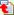

Propriétés d'un individu : Abonnements
Dans cet onglet, l'utilisateur connecté trouve la liste des groupes auxquels il peut s'abonner et/ou se désabonner.
La colonne "ABONNÈ" indique si l'utilisateur est ou non abonné au groupe.
Si l'utilisateur n'est pas abonné à un groupe et qu'il a le droit de s'y abonner, un bouton est affiché dans la colonne "ABONNÈ". Si l'utilisateur clique dessus, il s'abonne au groupe.
Si l'utilisateur est abonné à un groupe et qu'il a le droit de s'en désabonner, un bouton  est affiché dans la colonne "ABONNÈ". si l'utilisateur clique dessus, il se désabonne du groupe.
Les abonnements et désabonnements sont pris en compte directement, sans qu'il soit nécéssaire de demander l'enregistrement.
Il est à noter que les fonctions d'abonnement et de désabonnement des groupes sont également disponibles dans l'arborescence, grâce au menu contextuel.